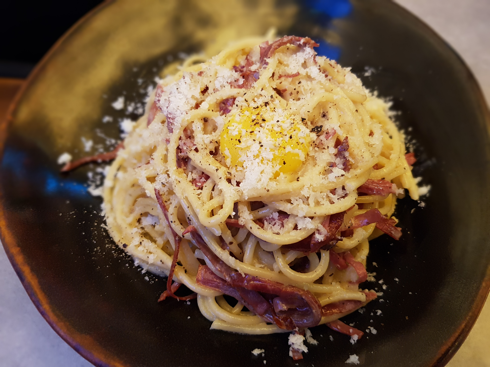

Home
Pasta Carbonara

Description
Pasta Carbonara is an Italian dish originated in Rome. It is one of the most popular dishes among tourists.
The sauce has a creamy texture which comes from the cheese that is used. And this sauce is usually served with long pastas such as spagetti and linguini
Ingredients
- 100g choice of pasta
- 100g guanciale
- 150g Pecorino romano cheese
- 4 Egg yolks
- Salt
- Black pepper
Steps
- Add your choice of pasta and salt to a pot of boiling water to cook. (two minutes shorter than recommended time on package)
- Cut your guanciale to small pieces and put them on heat in a pan to fry in its own fat. Make sure to keep mixing and not let them burn.
- mix egg yolks and cheese and black pepper in a bowl until you reach a consistent mixture.
- Add the fat from fried guanciale to the mixture of egg yolks and cheese, and take out two third of guanciale from the pan and put them aside.
- Add boiled pasta and half a cup of pasta water to the pan with one third of guanciale and finish cooking of pasta in the pan on heat. Make sure to keep mixing and not burn the pasta.
- Turn off the heat and add egg yolks and cheese mixture to pasta and mix. Let the sauce cook with heat from the hot pan. If requiered add pasta water for heat and creamy texture.
- Pour your pasta in a dish and use the left guanciale and pecorino romano to design.